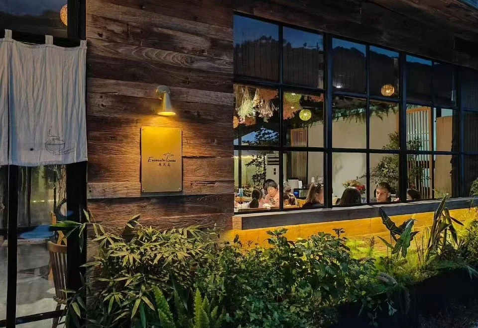
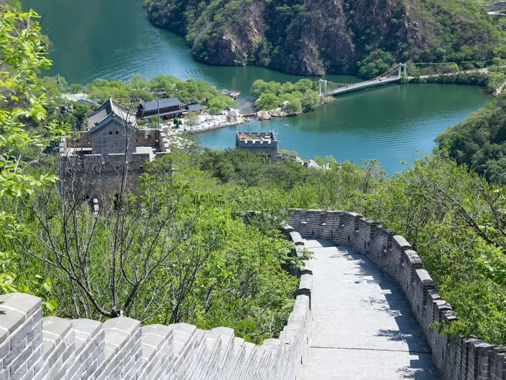
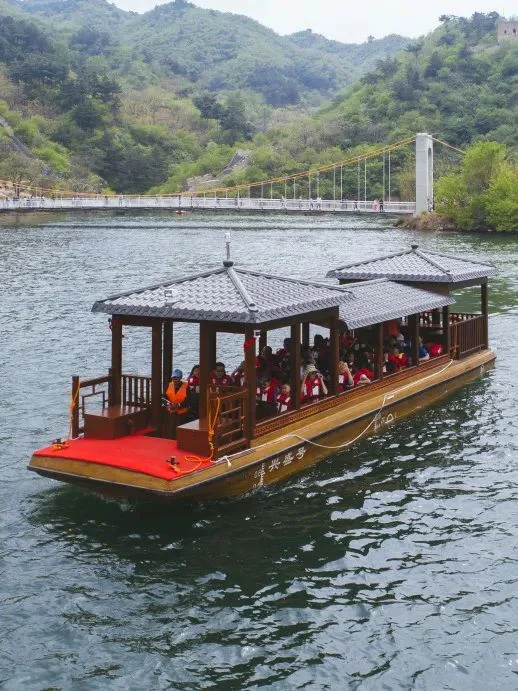

住进遇花园，去长城边看水
2026年10月1—2日 · 五道口出发 · 怀柔2天1晚
第一天把小院住舒服，第二天只玩一个景区。孩子有探索，长辈有休息，大人不用赶场。



行程卡
| 时间与区域 | 2026/10/1—10/2 · 怀柔九渡河 |
|---|---|
| 同行与节奏 | 夫妻 + 1位长辈 + 1位学龄儿童；午休固定，台阶可跳过 |
| 住宿锚点 | 北京遇花园民宿 · 九渡河镇撞道口村113号 |
| 自驾 | 五道口 → 民宿 → 西水峪正规水长城景区 → 五道口；公里数及实时车程尚未核准，以导航为准 |
| 活动强度 | 村内短步行 + 景区半日；不是完整环湖徒步，也不是长城穿越 |
| 核心取舍 | 保留民宿休息与水长城；不叠加慕田峪、红螺寺等大景点 |
这趟旅行的感觉
遇花园是这两天的落脚点，不只是睡一晚的中转站：午饭后休息，午后喝茶、看绿植、拍照，晚饭直接在住处解决。村内慢走量以长辈舒适为准，不为了凑景点沿公路暴走。
第二天才把风景展开：黄花城水长城把湖水、山林与长城放在一个画面里。本次看的是这个组合，而不是登城高度；能坐船就把体力留给岸边停留和亲子观察。
民宿身份与地址由Trip.com公开条目确认；具体房型、库存、国庆餐饮和店内活动需店家确认。商户字段见页末。
自驾与导航：两个地方别混淆
次日 → 西水峪「黄花城水长城旅游区」正规停车场/售检票口 → 五道口
先让民宿发定位与停车入口；第二天再按景区给出的入口定位导航。不要把“撞道口长城”“黄花城水库”或网友所谓“西门”当成正规景区入口。民宿页面的“附近景点”距离也不等于到售票口的道路距离，不按“走一小段就能进景区”安排。
建议10月1日07:00出发，去程先留2—3小时行车与休息缓冲，这只是排程余量，不是导航测算；国庆拥堵可能更长。路线选择交给当天导航，不预设某条高速一定更快。山区尽量白天行车；停车听工作人员安排，不占窄路会车点。
10月1日｜先到小院，不赶景点
以下是建议节奏，不是预约时刻。遇堵整体后移，先删散步，不压缩午休或赶夜路。
| 建议时段 | 安排与执行方式 | 时长 |
|---|---|---|
| 07:00起 | 五道口出发。途中按需要停车休息；带饮水、小点心、晕车用品。 | 预留2—3h+ |
| 抵达后 | 民宿停车、寄存行李、上洗手间。不假设上午能入住；若公共区未开放，先问店家可休息位置。 | 0.5h |
| 午饭前 | 村内平缓公共道路短散步，远看村落山景。热、累、道路车多就取消；不进入村后未开放长城。 | 0.5—1h |
| 约12:00 | 民宿午餐，提前问是否需预订。先点适合老人孩子的熟食、主食与蔬菜。 | 1h |
| 14:00后 | 办理入住、午休。平台公示入住14:00—22:00起，实际以订单/店家为准。 | 1.5h |
| 15:30起 | 院落休闲与亲子观察：找3种不同叶形、拍一组“木头与绿叶”照片、一起桌游。可问有无乒乓球/手工；未确认项目不作为必玩。 | 1—1.5h |
| 约17:30 | 住处晚餐，饭后聊聊天。需要烤鱼等菜提前询价预留；不临时驾车追网红店。 | 1—1.5h |
| 晚间 | 确认次日景区开放/开船、准备证件和鞋子，早点休息。 | 0.5h |
10月2日｜水长城半日，午饭后回城
建议争取08:00—08:30到景区，但前一晚先核早餐、车程与开园时间。若早餐不能提前，前晚备简餐或顺延；不为抢时间催老人。官网有黄金周8:00—18:00的公示，仍以当日通知为准。
| 顺序 | 安排与执行方式 | 时长 |
|---|---|---|
| 早餐、退房 | 吃饭、装车、检查证件药品，直接退房，避免午间折返民宿。 | 0.5—0.75h |
| 前往景区 | 导航至西水峪正规入口。此段精确车程未核，行程额外预留停车购票缓冲。 | 导航车程 + 0.5h |
| 景区主游览 | 按下方A/B线选一条。看水、拍照、休息、上洗手间都算游览；不加完整登城环线。 | 2.5—3h |
| 约11:30起 | 提前离开核心游览区，正规停车场周边就近午餐；先看菜单价格，不绑死未核验餐厅。 | 1h |
| 约13:00起 | 返五道口，不再绕另一个大景点。返程预留拥堵和休息，不承诺到家时刻。 | 预留2—3h+ |
A｜游船开航：首选省力线
正规入口 → 大坝方向 → 交通游船到湖心半岛 → 开放区域缓步与休息 → 优先乘船返回。官方线路介绍将“大坝坐船到半岛”列为适合老人孩子的轻松休闲线；官网给出的单程约6—7分钟只是航行参考，不含排队。先确认上坝台阶、登船条件及往返航线，不能据“有船”推断全程无障碍。
B｜停航或排队太久：短走即返
仅在工作人员确认开放的情况下，走大坝/上坝路—长城豁口—跨库桥方向的平缓开放段；随时原路折返，不要求走到半岛。官方完整近路线单程约2公里/40分钟是历史参考，不等于长辈步速，也不等于当前全段可走。建议每走20—30分钟检查体力；若排船超过约30分钟，直接减项。这是家庭舒适度规则，不是客流预测。
孩子的可选小任务
在正规开放区域寻找长城与水交会的视角；拍“桥、船、城墙”三种结构，想一想桥与城墙各解决什么问题。观察落叶和果实，不采挖、不砸石、不从城墙取砖；临水始终由成人近距离陪同，乘船穿救生衣。
雨天 / 闭园 / 长辈累了，怎么改
- 小雨且无预警：第一天取消村内散步，用阅读、桌游、喝茶替代。第二天结合景区通告决定；湿滑台阶不走。
- 雷雨、大风、山洪预警或景区关闭：取消山水景区，不换成野路“找入口”；与民宿核安全和道路条件，必要时提前返城或调整住宿。
- 长辈明显疲劳：全家共同缩线，不让老人独自在陌生入口等候；最多保留短距离景观停留，不把半岛设成必须到达点。
- 不把延寿寺作为确定兜底：开放信息尚不充分，不专程绕行。两天少去一个点，比增加一次不确定的停车排队更舒服。
票价与预算边界
以下来自2026-09-28直接读取的景区票务公示，不是锁定国庆订单价。游船与快艇是不同项目，儿童适用及票价单位购票前确认。
| 项目 | 官网公示 / 本次口径 |
|---|---|
| 成人门票 | 60元；两位普通成人120元 |
| 学龄儿童 | 半价30元；6周岁以上至18周岁政策，带有效证件 |
| 长辈门票 | 符合免票证件条件可免；非京籍60周岁以上符合政策者半价30元；不满足优惠条件按60元。不是“有老人就一律免票” |
| 四人大门票合计 | 150 / 180 / 210元，分别对应长辈免票 / 半价 / 全价 |
| 游船 | 单程25元、双程45元；快艇单程30元、双程55元。是否运营、线路及儿童政策另核 |
| 住宿、餐饮、停车、油费 | 未取得目标日期实时报价，不编总价；用实际房费 + 餐饮预算 + 门票及选购船票 + 用车成本相加 |
老人优惠须看证件：官方2026年6月7日公告的长期政策列有北京通养老助残卡、北京市有效居住证等条件；临行电话逐项确认。门票优惠不自动延伸到船票等二次消费。
出发前，一次问清
建议9月30日晚核验；本页截至9月28日的资料不能替代10月1—2日实时天气、交通和运营通知。下列勾选仅在当前页面有效，不上传个人信息。
🍽️ 住宿餐饮信息卡（商户锚点）
北京遇花园民宿 · Encounter Garden
地址：北京市怀柔区九渡河镇撞道口村113号。打开Trip.com原页核房型、订单与餐饮 →
已核公开配套：平台列中式早餐、中菜/烧烤餐饮；公示入住14:00—22:00起、退房12:00前。提前入住、国庆供餐、儿童加床与四人入住资格均需单独确认。
本次安排：以住宿内吃饭为主，少开车。烤鱼、家常菜和主食可问店家菜单，但不把任何一道菜写成已预订；同时问儿童不辣餐与老人易咀嚼菜品。
点评评分 / 评论量 / 人均 / 榜单：本轮没有完成大众点评可审计字段核验，留空，不引用不明来源数字，也不把酒店平台分数当点评分数。手工、乒乓球等仅作询问项。
预订风险：照片展示公共空间，不代表具体客房面积、隔音、采光或无台阶条件。让店家发实际房型与进房路线照片；国庆取消规则、房费和餐费以确认订单为准。